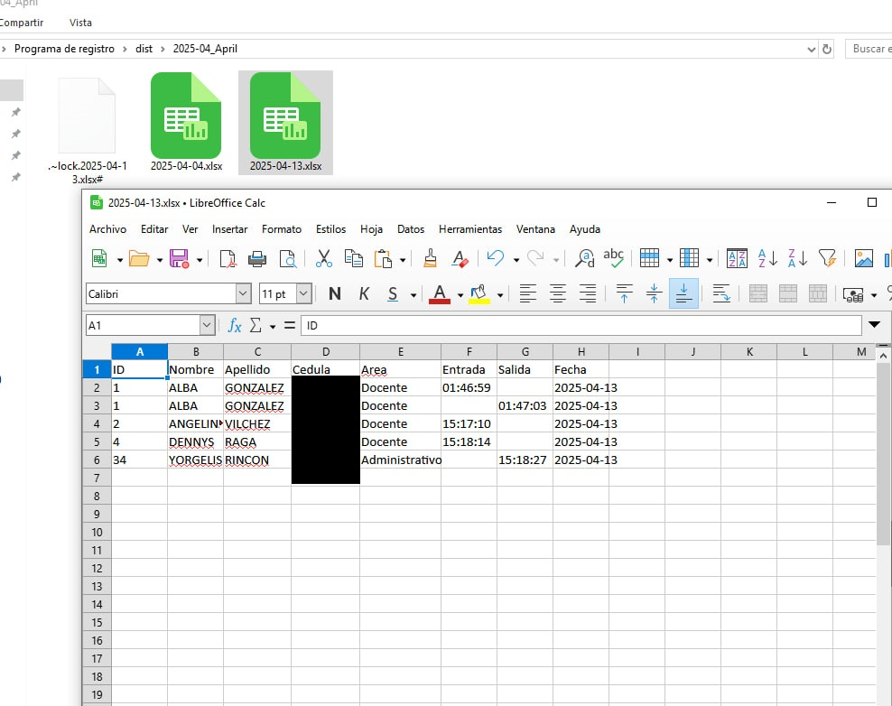
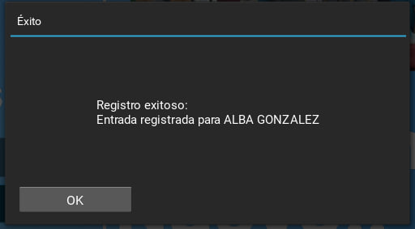
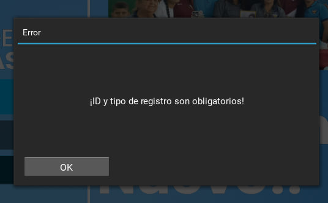
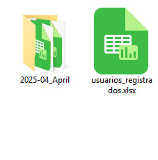

Registro de asistencias v2
Este sistema de registro de asistencias está diseñado para ser rápido, flexible y completamente funcional en modo offline, lo que garantiza su operación sin necesidad de conexión a internet. Actualmente, estoy trabajando en su versión online, pero esta edición actual ya ofrece un rendimiento excepcional con características clave que facilitan el control diario de entradas y salidas.
- Selección manual de entrada o salida: Un botón intuitivo permite al usuario elegir si está registrando una entrada o una salida.
- Ampliable y personalizable: Incluye una lista predeterminada de IDs de usuarios (del 1 al 45) que puede modificarse según las necesidades.
- Organización automática de datos: Crea automáticamente una carpeta para cada mes y un archivo diario dentro de ella.
- Durabilidad y eficiencia: Diseñado para funcionar durante largos períodos sin problemas.

Descripción de la foto 1.

Descripción de la foto 2.

Descripción de la foto 3.

Descripción de la foto 4.

Descripción de la foto 5.